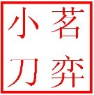

茗弈版块规则
#1 茗弈版块规则 作者：自来水 发表时间：2012-3-17 14:27:28
为了茗弈版块更好的发展，特制定此版规。
一 版块欢迎一切五子棋爱好者来做客交流，发帖回帖。
二 优先欢迎各种学术讨论。若有棋局疑问，尽管发表，交流，探讨。
三 欢迎各种与棋有关的新闻、故事，欢迎家族人员把你学棋路上的故事拿出来，与大家分享。你的快乐将成倍增长，你的忧伤也将成倍缩小。
四 本版可开帖进行邀请赛。若在比赛过程中出现如打点等问题，版主副版主均有权指出。
五 发帖及回帖将根据情况奖励威望和鲜花，但若有反动、攻击家族及个人等现象，将扣一个威望惩罚，若警告惩罚后依然我行我素，将严惩或交由爱五网管理处理。
茗弈社团 2012.3.15
